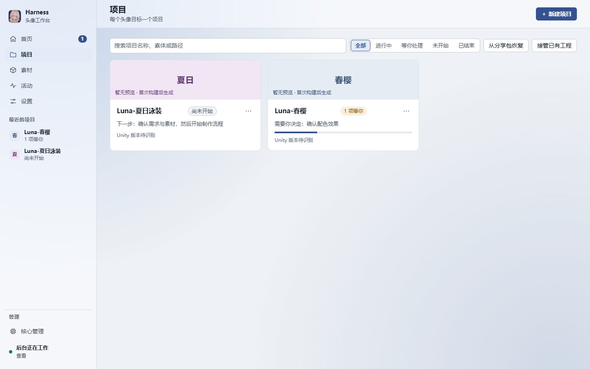

01 · 说明目标
用对话或表单说明目标
新建项目时描述想要的头像，或从素材库挑选；已有的 VCC/VPM 工程可以接管进来。项目列表按进行中、等你处理、未开始、已结束筛选，每张卡片都写着下一步或需要你决定的事。
- 对话或表单：两种方式说明目标，由你选。
- 接管已有工程：适用于 VRChat 头像，兼容 VCC/VPM 工程。
- 你的素材：目标围绕你自己拥有的素材来定。

- 按「进行中 / 等你处理 / 未开始 / 已结束」筛选项目
- 接管已有工程
- 每张卡片写着下一步或需要你决定的事（「需要你决定：确认配色效果」）